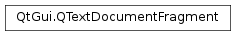

QTextDocumentFragment¶
Synopsis¶
Functions¶
- def
isEmpty() - def
toHtml([encoding=QByteArray()]) - def
toPlainText()
Static functions¶
- def
fromHtml(html) - def
fromHtml(html, resourceProvider) - def
fromPlainText(plainText)
Detailed Description¶
The
PySide2.QtGui.QTextDocumentFragmentclass represents a piece of formatted text from aPySide2.QtGui.QTextDocument.A
PySide2.QtGui.QTextDocumentFragmentis a fragment of rich text, that can be inserted into aPySide2.QtGui.QTextDocument. A document fragment can be created from aPySide2.QtGui.QTextDocument, from aPySide2.QtGui.QTextCursor‘s selection, or from another document fragment. Document fragments can also be created by the static functions,PySide2.QtGui.QTextDocumentFragment.fromPlainText()andPySide2.QtGui.QTextDocumentFragment.fromHtml().The contents of a document fragment can be obtained as plain text by using the
PySide2.QtGui.QTextDocumentFragment.toPlainText()function, or it can be obtained as HTML withPySide2.QtGui.QTextDocumentFragment.toHtml().
-
class
PySide2.QtGui.QTextDocumentFragment¶ -
class
PySide2.QtGui.QTextDocumentFragment(range) -
class
PySide2.QtGui.QTextDocumentFragment(document) -
class
PySide2.QtGui.QTextDocumentFragment(rhs) Parameters: - range –
PySide2.QtGui.QTextCursor - document –
PySide2.QtGui.QTextDocument - rhs –
PySide2.QtGui.QTextDocumentFragment
Constructs an empty
PySide2.QtGui.QTextDocumentFragment.Creates a
PySide2.QtGui.QTextDocumentFragmentfrom thecursor‘s selection. If the cursor doesn’t have a selection, the created fragment is empty.Converts the given
documentinto aPySide2.QtGui.QTextDocumentFragment. Note that thePySide2.QtGui.QTextDocumentFragmentonly stores the document contents, not meta information like the document’s title.Copy constructor. Creates a copy of the
otherfragment.- range –
-
static
PySide2.QtGui.QTextDocumentFragment.fromHtml(html, resourceProvider)¶ Parameters: - html – unicode
- resourceProvider –
PySide2.QtGui.QTextDocument
Return type: Returns a
PySide2.QtGui.QTextDocumentFragmentbased on the arbitrary piece of HTML in the giventext. The formatting is preserved as much as possible; for example, “<b>bold</b>” will become a document fragment with the text “bold” with a bold character format.If the provided HTML contains references to external resources such as imported style sheets, then they will be loaded through the
resourceProvider.
-
static
PySide2.QtGui.QTextDocumentFragment.fromHtml(html) Parameters: html – unicode Return type: PySide2.QtGui.QTextDocumentFragmentReturns a
PySide2.QtGui.QTextDocumentFragmentbased on the arbitrary piece of HTML in the giventext. The formatting is preserved as much as possible; for example, “<b>bold</b>” will become a document fragment with the text “bold” with a bold character format.
-
static
PySide2.QtGui.QTextDocumentFragment.fromPlainText(plainText)¶ Parameters: plainText – unicode Return type: PySide2.QtGui.QTextDocumentFragmentReturns a document fragment that contains the given
plainText.When inserting such a fragment into a
PySide2.QtGui.QTextDocumentthe current char format of thePySide2.QtGui.QTextCursorused for insertion is used as format for the text.
-
PySide2.QtGui.QTextDocumentFragment.isEmpty()¶ Return type: PySide2.QtCore.boolReturns
trueif the fragment is empty; otherwise returnsfalse.
-
PySide2.QtGui.QTextDocumentFragment.toHtml([encoding=QByteArray()])¶ Parameters: encoding – PySide2.QtCore.QByteArrayReturn type: unicode Returns the contents of the document fragment as HTML, using the specified
encoding(e.g., “UTF-8”, “ISO 8859-1”).
-
PySide2.QtGui.QTextDocumentFragment.toPlainText()¶ Return type: unicode Returns the document fragment’s text as plain text (i.e. with no formatting information).
© 2018 The Qt Company Ltd. Documentation contributions included herein are the copyrights of their respective owners. The documentation provided herein is licensed under the terms of the GNU Free Documentation License version 1.3 as published by the Free Software Foundation. Qt and respective logos are trademarks of The Qt Company Ltd. in Finland and/or other countries worldwide. All other trademarks are property of their respective owners.